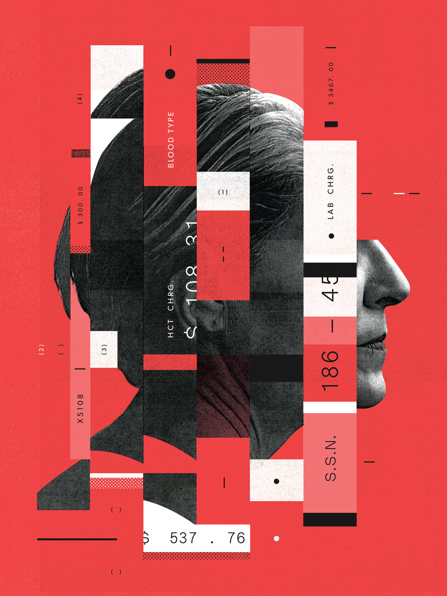

Welcome to Дизайн интерьера у вас в городе
Дизайн - это... Что такое Дизайн?
2020.11.20 17:07Дизайн - это... Что такое Дизайн?
Альтернативные определения термина
Дизайн — творческий метод , процесс и результат художественно-технического проектирования промышленных изделий, их комплексов и систем, ориентированного на достижение наиболее полного соответствия создаваемых объектов и среды в целом возможностям и потребностям человека, как утилитарным, так и эстетическим. Дизайн — искусство компоновки, стилистики и украшения.Для дизайна актуально множество направлений.
Дизайн — творческий процесс создания вещи, в котором эстетика определяет содержимое (суть), а технологии форму вещи. Дизайн — неразрывная взаимообусловленная связь эстетики и технологий, в которой эстетика задает содержание (суть) вещи или процесса, а технологии их форму.История
Дизайн, в применении к моде . Функциональность и эстетика платья для массового потребителя Основная статья: История дизайнаСлово « design » появилось в XVI веке и однозначно употреблялось во всей Европе . Слово "дизайн" впервые упомянул в одной из своих работ итальянец К. В. Скьер [ источник не указан 717 дней ] . Итальянское выражение «designo intero» означало рожденную у художника и внушенную Богом идею — концепцию произведения искусства . Оксфордский словарь 1588 года дает следующую интерпретацию этого слова: « задуманный человеком план или схема чего-то, что будет реализовано, первый набросок будущего произведения искусства ».
В сентябре 1969 года на конгрессе Международного совета организаций по дизайну (ИКСИД) было принято следующее определение: « Под термином дизайн понимается творческая деятельность, цель которой определение формальных качеств предметов, производимых промышленностью. Эти качества формы относятся не только к внешнему виду, но главным образом к структурным и функциональным связям, которые превращают систему в целостное единство с точки зрения, как изготовителя, так и потребителя ».
В середине XX века в профессиональном лексиконе для обозначения формообразования в условиях индустриального производства употреблялось понятие «индустриальный дизайн». Тем самым подчеркивалась его неразрывная связь с промышленным производством и конкретизировалась многозначность термина «дизайн». И многие трактаты по истории дизайна того времени в заголовках содержали уточнение «индустриальный дизайн». Затем в конце XX века проектно-художественную деятельность в области индустриального формообразования стали называть более кратко — «дизайн». Отчасти это связано и с тем, что общество вступило в фазу постиндустриального развития, произошли значительные перемены в целеустановках «индустриального дизайна».
Современное представление о дизайне в цивилизованном мире рассматривается гораздо шире, чем промышленное проектирование. Известный американский дизайнер в области рекламы Максиме Виньелли (Massimo Vignelli) воскликнул: «Дизайн всеобщ!» И действительно, в любой области созидательной деятельности человека, будь то искусство, строительство или политика мы сталкиваемся с понятием дизайна.
Дизайн как творческий процесс можно разделить на:
художественный дизайн — создание вещного мира сугубо с точки зрения эстетики восприятия (внешние проявления формы); техническую эстетику — науку о дизайне, учитывающую все аспекты, и прежде всего конструктивность (ранний этап становления), функциональность (средний), комфортность производства, эксплуатации, утилизации технического изделия и т. д. (современное понимание).Объект дизайна
Объектом дизайна может стать практически любое новое техническое промышленное изделие (комплект, ансамбль , комплекс , система ) в любой сфере жизнедеятельности людей, где социально-культурно обусловлено человеческое общение.
Основные категории объекта дизайна
Образ — идеальное представление об объекте, художественно-образная модель, созданная воображением дизайнера. Функция — работа, которую должно выполнять изделие, а также смысловая, знаковая и ценностная роли вещи. Морфология — строение, структура формы изделия, организованная в соответствии с его функцией, материалом и способом изготовления, воплощающая замысел дизайнера. Технологическая форма — морфология, воплощенная в способе промышленного производства вещи-объекта дизайн-проектирования в результате художественного осмысления технологии. Эстетическая ценность — особое значение объекта, выявляемое человеком в ситуации эстетического восприятия, эмоционального, чувственного переживания и оценки степени соответствия объекта эстетическому идеалу субъекта.Методики постановки дизайн-задач
Футуродизайн - методологияМетодики поиска дизайн-решения
Выставочное моделирование Музейное ситуационное моделирование Перевоплощение или заимствование позиции Проецирование личности в проектируемый объект Сценарное моделирование Игровое ситуационное моделирование Математическое и физическое моделирование динамики объекта в средеРазновидности дизайна
Многофункциональная детская мебель, дизайнер — Kristian Solmer Vedel , 1951 , промышленно произведено в 1956 Промышленный дизайн Транспортный дизайн Информационный дизайн Проектирование взаимодействия Проектирование программного обеспечения Веб-дизайн Дизайн интерьеров Световой дизайн Дизайн церемоний Графический дизайн Книжный дизайн Полиграфический дизайн Ландшафтный дизайн Экодизайн Архитектурный дизайн Футуродизайн Звуковой дизайнСм. также
Портал «Дизайн» Дизайн в Викисловаре ? Дизайн на Викискладе ? Функциональный комфорт Эргономика ВНИИТЭ Кабриоль — стиль мебельного дизайнаЛитература
Дональд А. Норман. Дизайн привычных вещей = The Design of Everyday Things. — М .: «Вильямс», 2006. — С. 384. — ISBN 0-465-06710-7 И. Розенсон. Основы теории дизайна. — СПб. : Питер, 2006. — 224 с. — ISBN 5-469-01143-7 Лакшми Бхаскаран. Дизайн и время. — СПб. : Арт-родник, 2009.Ссылки
Примечания
↑ Определение дизайна, предложенное Томасом Мальдонадо и утверждённое на VI Конгрессе ИКСИД . Категория: ДизайнWikimedia Foundation . 2010 .
Синонимы : аэродизайн , веб-дизайн , евродизайн , интернет-дизайн , проектирование , спецдизайн , теледизайн , фитодизайн , фотодизайнКлассическая музыка Инерциальная система отсчёта
Смотреть что такое "Дизайн" в других словарях:
Дизайн — (от англ, design проектировать, чертить, задумать, а также проект, план, рисунок), термин, обозначающий разновидность художественно проектной деятельности, охватывающей создание промышленных изделий и рациональное формирование целостной … Художественная энциклопедия
Дизайн — (англ. design проект, чертеж, проектирование) «Вид проектной междисциплинарной художественно технической деятельности по формированию предметной среды. Особенность дизайнерской деятельности заключается в специфически эстетическом способе … Энциклопедия культурологии
Дизайн — Дизайн: игровая площадка для детей 6 10 лет; дизайнер Джеймс Туми, Такома, штат Вашингтон, 1987. ДИЗАЙН (от английского design замысел, проект, чертеж, рисунок), вид художественной деятельности, проектирование промышленных изделий, обладающих … Иллюстрированный энциклопедический словарь
дизайн — проектирование Словарь русских синонимов. дизайн сущ., кол во синонимов: 14 • автодизайн (1) • … Словарь синонимов
ДИЗАЙН — [англ. design проектировать, конструировать] художественное конструирование предметов, изделий; создание эстетического облика среды. Словарь иностранных слов. Комлев Н.Г., 2006. дизайн (англ. design проектировать, конструировать) художественное … Словарь иностранных слов русского языка
ДИЗАЙН — (от англ. design замысел проект, чертеж, рисунок), термин, обозначающий различные виды проектировочной деятельности, имеющей целью формирование эстетических и функциональных качеств предметной среды. В узком смысле дизайн художественное … Большой Энциклопедический словарь
ДИЗАЙН — (англ. design) художественное проектирование промышленных изделий, предметной среды. Райзберг Б.А., Лозовский Л.Ш., Стародубцева Е.Б.. Современный экономический словарь. 2 е изд., испр. М.: ИНФРА М. 479 с.. 1999 … Экономический словарь
ДИЗАЙН — ДИЗАЙН, а, муж. Конструирование вещей, машин, интерьеров, основанное на принципах сочетания удобства, экономичности и красоты. Толковый словарь Ожегова. С.И. Ожегов, Н.Ю. Шведова. 1949 1992 … Толковый словарь Ожегова
ДИЗАЙН — (от англ. design проектировать) англ. design; нем. Desing. 1. Вид деятельности по проектированию предметного мира; разработка образцов рационального построения предметной среды, соответствующих сложному функционированию современного общества. 2. … Энциклопедия социологии
Дизайн — англ.Design проектировать художественное конструирование предметного мира; разработка образцов рационального построения предметной среды. Словарь бизнес терминов. Академик.ру. 2001 … Словарь бизнес-терминов
Книги
Дизайн , . "Нет существенной разницы между художником и ремесленником. Тогда давайте создадим новую гильдию ремесленников без классовых различий, которые надменно создают преграду между ремесленником и Подробнее Купить за 1687 грн (только Украина) Дизайн человека , Паркин Четан. Дизайн Человека - это революционная технология самопознания для современных продвинутых людей. Благодаря ей вы откроете свою истинную природу, причину поступков, взлетов и падений. Дизайн Подробнее Купить за 636 руб Дизайн человека , Паркин Четан. Дизайн Человека - это революционная технология самопознания для современных продвинутых людей. Благодаря ей вы откроете свою истинную природу, причину поступков, взлетов и падений. Дизайн Подробнее Купить за 468 руб Другие книги по запросу «Дизайн» > >18+ © Академик, 2000-2020 Обратная связь: Техподдержка , Реклама на сайте Change privacy settings
🔥 Промокоды Путешествия Экспорт словарей на сайты , сделанные на PHP, Joomla, Drupal, WordPress, MODx. Пометить текст и поделиться Искать во всех словарях Искать в переводах Искать в Интернете
